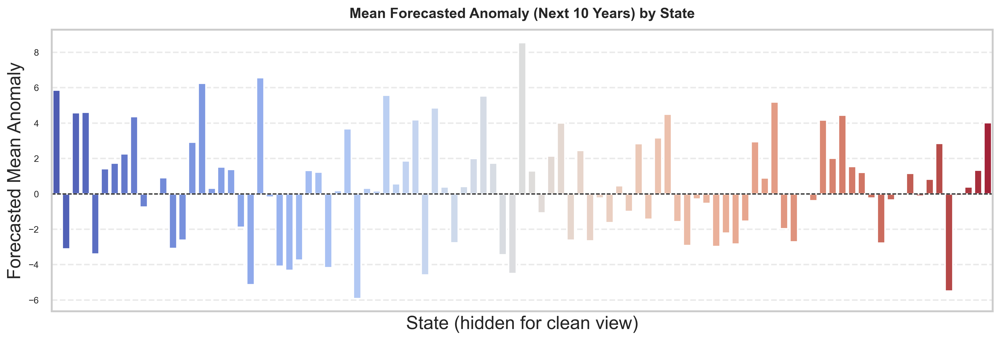
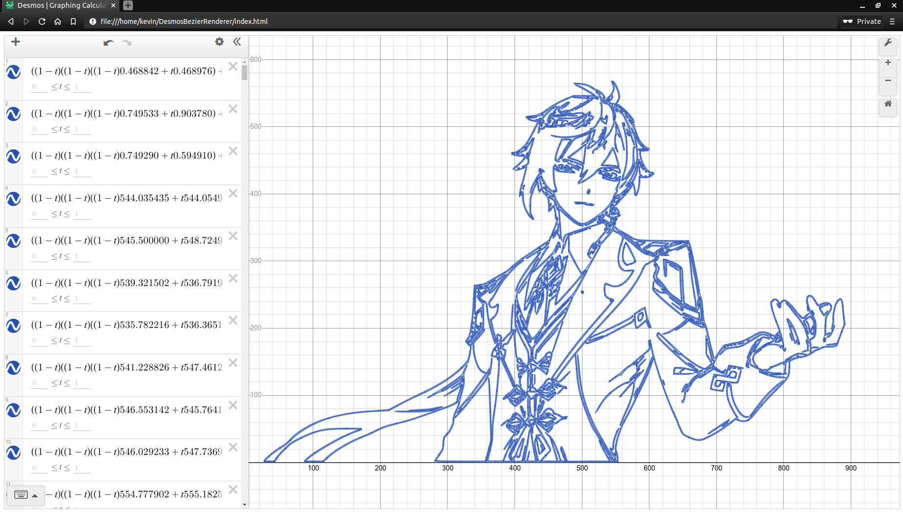
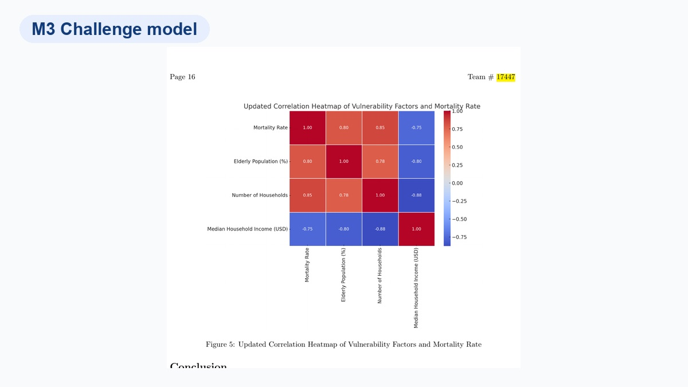
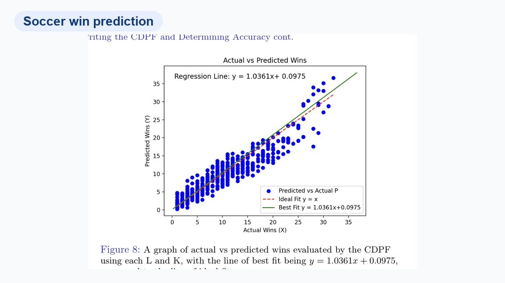
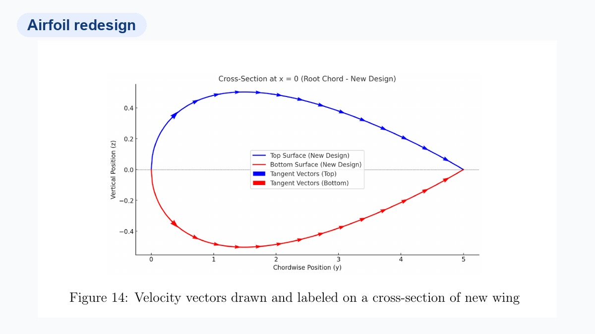
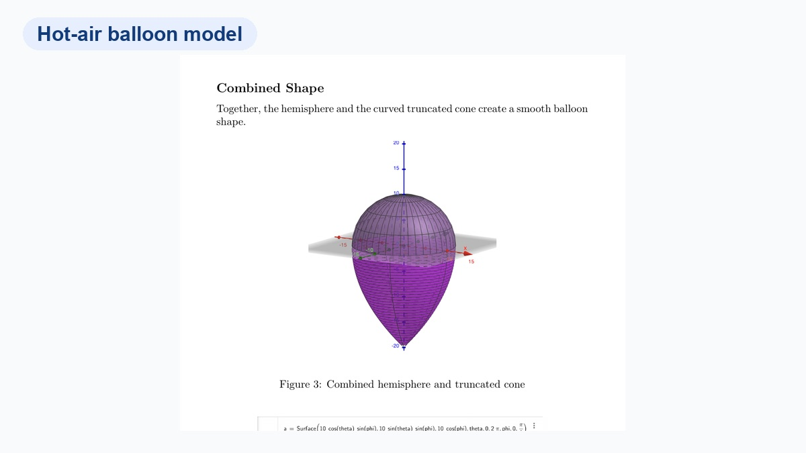
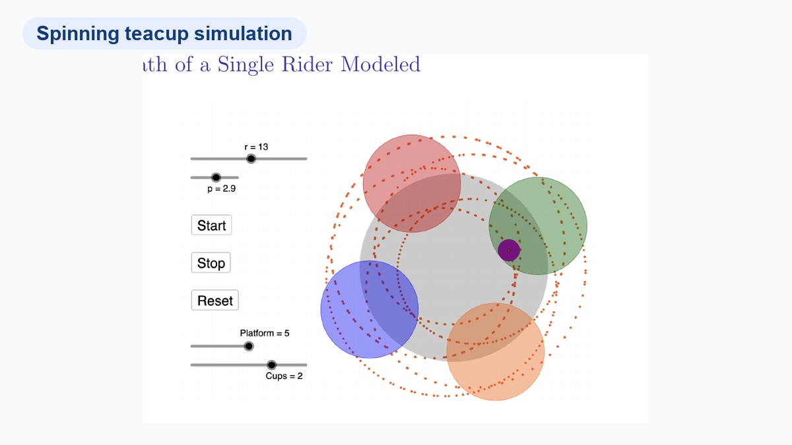
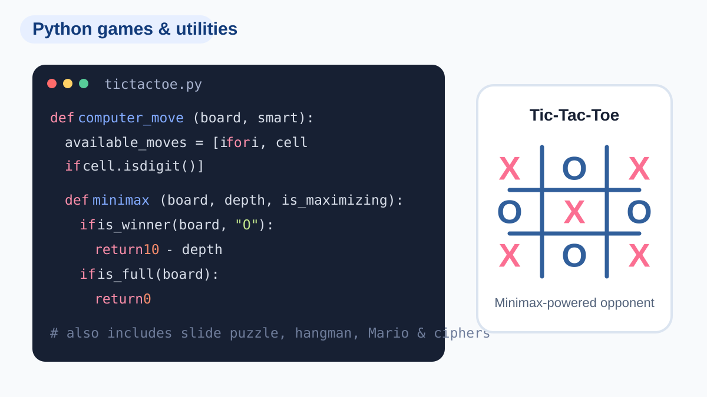

Programming
PythonJavaJavaScriptLuaMATLABGitLaTeX
I’m most interested in quantitative research, scientific computing, statistical modeling, and applied AI. My work has included long-run climate analysis, consumer-behavior research, mathematical modeling, interactive graphics, and programming education.
Analyzed BoardGameGeek data with regression and boosting methods, studied how ratings, complexity, and play time relate to consumer response, and presented findings at CONF-APMM 2025.
Studied NOAA climate records from 1895–2024 with harmonic regression, Fourier analysis, wavelets, and change-point detection; produced reproducible Python code and documented results.
Provide individualized K–12 tutoring, identify learning gaps, adapt instruction, and track progress with families and coordinators.
Taught algorithms and data structures to 15+ students and mentored peers in Python and Discord application development.
Led weekly in-person and online tutoring in calculus and linear algebra through a student-run mathematics program.
Led practice and tournament preparation for 10+ peers, coached developing debaters, and organized lower-level competition activities.

Frequency-aware analysis of long-run U.S. climate records using harmonic and wavelet methods.

An image-to-curve workflow for real-time Bézier artwork and animation in Desmos.

Modeled heat, power demand, and vulnerability for the 2025 M3 Challenge.

Evaluated a regression model for team wins across the 2008–2016 seasons.

Analyzed geometry, pressure, velocity, and lift for a redesigned airfoil.

Modeled balloon geometry, volume, lift, and thermal behavior.

Modeled rider paths and g-forces on a teacup-style amusement ride.

Games, ciphers, puzzles, and utilities—including a minimax tic-tac-toe opponent.
B.S. in Applied Mathematics
High School Diploma
Multivariable Calculus
Precalculus and Linear Algebra
Paper, reproducible code, and figures.
BoardGameGeek analysis using regression and boosting methods, with an accompanying research video.